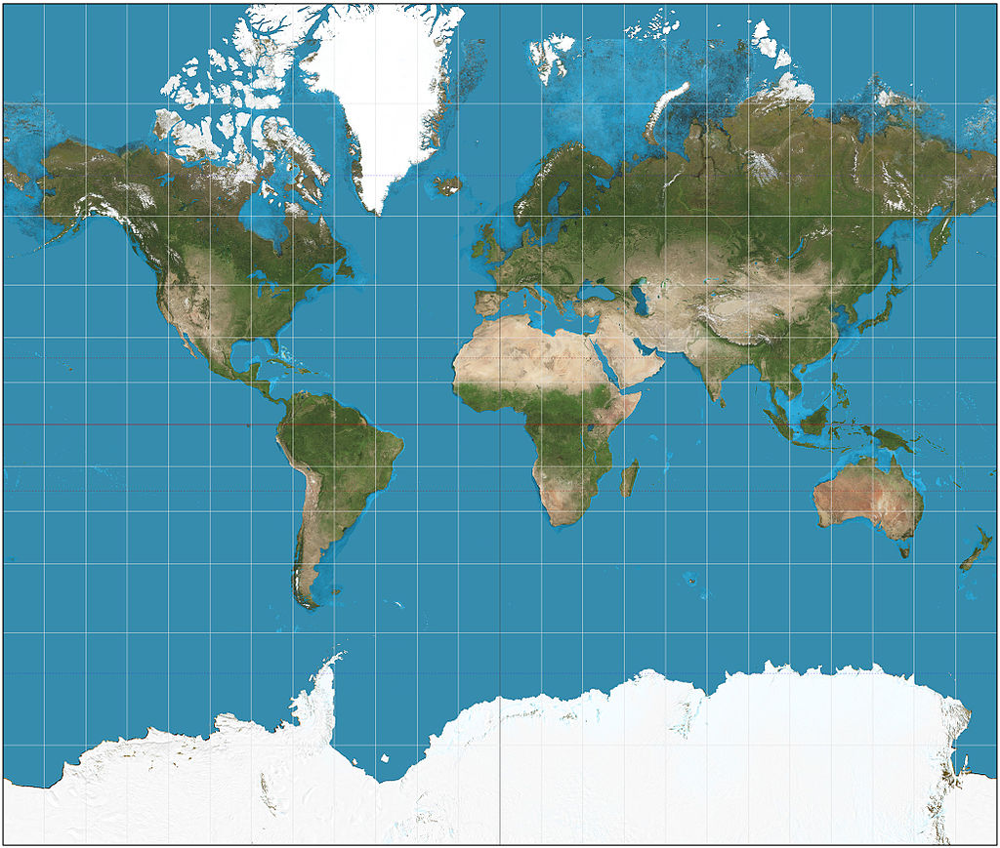
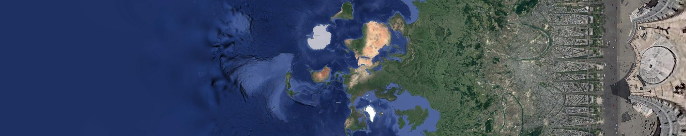
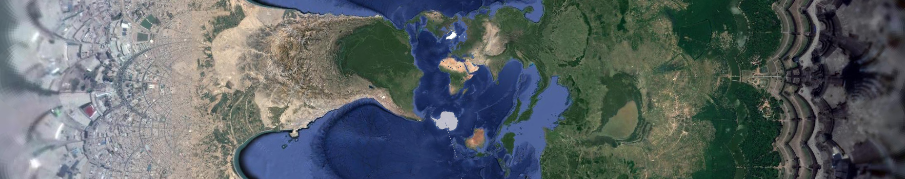
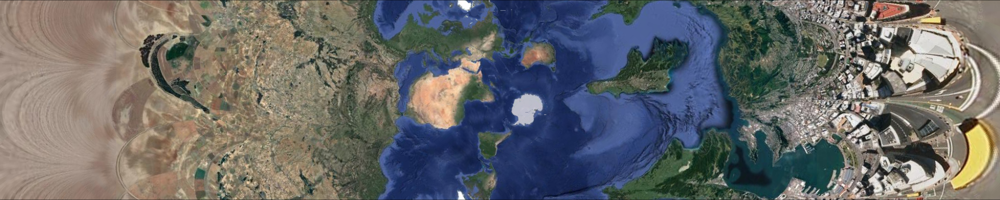
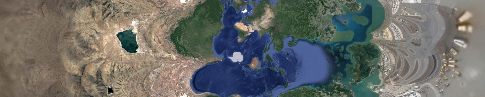

The much-maligned Mercator Projection is indeed unsuitable for maps (famously it renders Greenland as large as Africa when in fact it is as large as Saudi Arabia):

What is rarely mentioned is that the Mercator projection is infinite. That is, if you extended it further north and further south the magnification would become more and more extreme. David Swart has a TedX video on it and has worked extensively with its mathematics. He has also created many amazing and whimsical projections.
Drew Roos has written a program (here) that demonstrates this. Here is an example:
So the above projection is the same view as the first one except, a) it is turned on its side, and b) it extends much further – getting asymptotically closer to the north pole on the right and the south pole on the left with higher and higher degrees of magnification.
Since his images come from Google there is a limit to how much magnification he can do. But you can certainly zoom in as far as Google can (to the city block say).
There is no reason the north and south poles have to be, um, at the poles. We can choose any pair of antipodes to be poles. For instance here is what it looks like if we put the Arc De Triomphe at the north pole.

Note the radiating spokes of the streets emanating from Place de L'Etoile.
Apparently Angor Wat is exactly antipodal to a town in Chincha Province, Peru:

And Wellington, NZ is antipodal to Alaejos Spain:

And Hong Kong is antipodal to La Quiaca Argentina:

Anyhow play with it yourself here: https://mrgris.com/projects/merc-extreme/
The site antipodesmap.com was useful for finding interesting antipodal pairs.
And do check out that video by David Swart for all the details.
The map at the top is from the Wikipedia article on the Mercator Projection.
 Dolly Zoom using Möbius Transforms
Deleuze Notes: Desiring Production
Dolly Zoom using Möbius Transforms
Deleuze Notes: Desiring Production